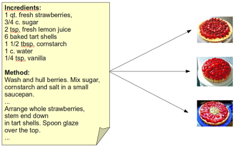
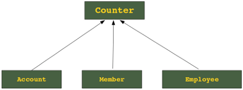

Classes
Object Oriented Programming
 Though Python is an object-oriented language without fuss or quibble, we have so far
intentionally avoided in the previous chapters of our Python tutorial the treatment
of object oriented programming (OOP). We skipped OOP, because we are convinced, that
it is easier and more fun to start learning Python without having to know about all the
details of object oriented programming.
Though Python is an object-oriented language without fuss or quibble, we have so far
intentionally avoided in the previous chapters of our Python tutorial the treatment
of object oriented programming (OOP). We skipped OOP, because we are convinced, that
it is easier and more fun to start learning Python without having to know about all the
details of object oriented programming.
But even though we have avoided OOP, it had been nevertheless present in our exercises and
examples. We used objects and methods from classes wihout knowing properly about their existence.
In this chapter we are giving a proper introduction into the
object oriented approach of Python. OOP is one of the most powerful tools of Python, but
nevertheless you don't have to use it, i.e. you can write powerful and efficient programs
without it as well.
Though many computer scientists and programmers consider OOP to be a modern programming paradigm,
the roots go back to 1960s. The first programming language to use objects was Simula 67. As the
name implies, Simula 67 was introduced in the year 1967.
The four major principles of object orientation are:
- Encapsulation
- Data Abstraction
- Polymorphism
- Inheritance
An object oriented program is based on classes and there exists a collection of interacting objects, as opposed to the conventional model, in which a program consists of functions and routines. In OOP, each object can receive messages, process data, and send messages to other objects.
Analogy: The Cake Class
A class definition can be compared to the recipe to bake a cake. A recipe is needed to bake a cake.
The main difference between a recipe (class) and a cake (an instance or an object of this class) is
obvious. A cake can be eaten when it is baked, but you can't eat a recipe, unless you like the taste of
printed paper.

Like baking a cake, an OOP program constructs objects according to the class
definitions of the program program. A class contains variables and methods. If you bake a cake
you need ingredients and instructions to bake the cake. Accordingly a class needs variables and methods.
There are class variables, which have the same value in all methods and their are instance variables,
which have normally different values for different objects. A class also has to define all the necessary
methods, which are needed to access the data.
Some books use other analogies, like e.g. paper pattern and shirts. In this case the paper pattern
corresponds to a class and the shirts are instances or objects of this class. Another well liked example
is the class "house plans" and the house (or houses) built according to this plan.
Classes, Objects, Instances
 A class defines a data type, which contains variables, properties and methods. A class describes
the abstract characteristics of a real-life thing. We avoided the expression "object" in the previous
sentence and used "thing" instead, because an object is used as an expression in OOP as well as to denote
an instance of a class. With the expression "real-life" thing we have concepts (classes) like "bank account"
or "account holder" in mind.
The abstract characteristics of a "thing" include its attributes and properties and the thing's behaviour,
i.e. the methods and operations of this thing.
A class defines a data type, which contains variables, properties and methods. A class describes
the abstract characteristics of a real-life thing. We avoided the expression "object" in the previous
sentence and used "thing" instead, because an object is used as an expression in OOP as well as to denote
an instance of a class. With the expression "real-life" thing we have concepts (classes) like "bank account"
or "account holder" in mind.
The abstract characteristics of a "thing" include its attributes and properties and the thing's behaviour,
i.e. the methods and operations of this thing.
There can be instances and objects of classes. An instance is an object of a class created at run-time.
In programmer vernacular, a strawberry tart is an instance of the strawberry recipe class.
The set of values of the attributes of a particular object is called its state. The object consists of
state and the behavior that's defined in the object's classes
The terms object and instance are normally used synonymously.
As we have said, classes usually contain attributes and properties and methods for these instances and
properties. Essentially, a method is a function, but it's a special kind of function which belongs to
a class, i.e. it is defined within a class, and works on the instance and class data of this class.
Methods can only be called through instances of a class or a subclass, i.e. the class name followed
by a dot and the method name.
In our illustration we show an example of two classes "Account" and "Account Holder". The data of the
"Account Holder" consists for example of the Holder Surname and Prename, Adress, Profession, and Birthday.
Methods are "Change of Residence" and "Change of Residence". This model is not complete, because we need
more data and above all more methods like e.g. setting and getting the birthday od an account holder.
Encapsulation of Data
 Another important advantage of OOP consists in the encapsualtion of data. We can say that object-oriented
programming relies heavily on encapsulation. The terms encapsulation and abstraction (also data hiding)
are often used as synonyms. They are nearly synonymous, i.e. abstraction is achieved though encapsulation.
Data hiding and encapsulation are the same concept, so it's correct to use them as synonyms.
Another important advantage of OOP consists in the encapsualtion of data. We can say that object-oriented
programming relies heavily on encapsulation. The terms encapsulation and abstraction (also data hiding)
are often used as synonyms. They are nearly synonymous, i.e. abstraction is achieved though encapsulation.
Data hiding and encapsulation are the same concept, so it's correct to use them as synonyms.
Generally speaking encapsulation is the mechanism for restricting the access to some of an objects's
components, this means, that the internal representation of an object can't be seen from outside of the
objects definition. Access to this data is typically only achieved through special methods: Getters
and Setters. By using solely get() and set() methods, we can make sure that the internal data cannot
be accidentally set into an inconsistent or invalid state.
It's nearly always possible to circumvent this protection mechanism: E.g.
in C++ by the "friends" mechanism, in Java and Ruby via reflection API or in Python by name mangling.
A method to set private data can also be used to do some plausibility checks. In our example, we can
check, if the birthday makes sense, e.g. it's not very likely that a customer is more than are 100 years
old. Or we can rule out, that a customer with a giro account is less than 14 years old.
Inheritance
 Classes can inherit other classes. A class can inherit attributes and behaviour (methods) from other
classes, called super-classes. A class which inherits from super-classes is called a Sub-class.
Super-classes are sometimes called ancestors as well. There exists a hierarchy relationship between classes.
Classes can inherit other classes. A class can inherit attributes and behaviour (methods) from other
classes, called super-classes. A class which inherits from super-classes is called a Sub-class.
Super-classes are sometimes called ancestors as well. There exists a hierarchy relationship between classes.
If we have a closer look at our previous example about the class account, we can see that this model can
satisfy the needs of a real bank. Banks have normally different kinds of accounts, e.g. Savings Accounts,
Giro Accounts and others. Though these different account types are quite different, they have nevertheless
many properties and methods in common. E.g. each account has and needs an account number, a holder and
a balance. Furthermore it mus be possible for each of them to deposit or withdraw money.
So, there is something like a "fundamental" account from which they inherit. Inheritance is used to create
new classes by using existing classes. New ones can both be created by extending and by restricting the existing
classes.
Now it's time to get back to Python and see how a class is implemented in Python. We start with
the most simple class, which can be defined. We just give it a name but omit all further specifications by using
the n keyword.
class Account(object): passWe haven't defined any attributes or any methods in our simple account class. Now we will create an instance of this empty class:
$ python3 Python 3.1.2 (r312:79147, Sep 27 2010, 09:57:50) [GCC 4.4.3] on linux2 Type "help", "copyright", "credits" or "license" for more information. >>> from Account import Account >>> x = Account() >>> print(x)>>>
Definition of Methods
A method differs from a function only in two aspects:
- it belongs to a class and it is defined within a class
- the first parameter in the definition of a method has to be a reference "self" to the instance of the class
- a method is called without this parameter "self"
class Account(object):
def transfer(self, target, amount):
pass
def deposit(self, amount):
pass
def withdraw(self, amount):
pass
def balance(self):
pass
We can already use these methods, even though the body is not defined, as we see in the following interactive session:
>>> from Account import Account >>> x = Account() >>> x.deposit(1000) >>> x.transfer(2078987, 1200.87)The problems with our methods is, that e.g. we deposit 1000,- Euros (or Dollars or whatever currency) or we transfer an amount of 1200.87 to an account with the number 2078987, but nothing really happens. So far we have no way of storing and changing the values.
Constructor
Python doesn't have explicit constructors like C++ or Java, but the __init__() method
in Python is something similiar, though it is strictly speaking not a constructor.
It behaves in many ways like a constructor, e.g. it is the first code which is executed,
when a new instance of a class is created. The name sounds also like a constructor "__init__".
But strictly speaking it would be wrong to call it a constructor, because a new instance is
already "constructed" by the time the method __init__ is called.
But anyway, the __init__ method is used - like constructors in other object oriented
programming languages - to initialize the instance variables of an object. The definition
of an init method looks like any other method definition:
def __init__(self, holder, number, balance,credit_line=1500):
self.Holder = holder
self.Number = number
self.Balance = balance
self.CreditLine = credit_line
If we use this class now, we have to pass 3 or four parameters to the object, when it is created
with __init__, as we can see in the following seession. We can see also, that the class doesn't accept
the creation of objects with insufficient parameters:
>>> from Account import Account
>>> x = Account("Bill Boe", 234322, 10000)
>>> x = Account()
Traceback (most recent call last):
File "<stdin>", line 1, in <module>
TypeError: __init__() takes at least 4 positional arguments (1 given)
>>>
Destructor
What we said about constructors holds true for destructors as well. There is no "real" destructor, but
something similiar, i.e. the method __del__.
It is called when the instance is about to be destroyed. If a base class has a __del__() method,
the derived class's __del__() method, if any, must explicitly call it to ensure proper deletion
of the base class part of the instance.
The following example shows a class with a constructor and a destructor:
class Greeting:
def __init__(self, name):
self.name = name
def __del__(self):
print("Destructor started")
def SayHello(self):
print("Hello", self.name)
If we use this class, we can see, the "del" doesn't directly call the __del__() method. It's apparant, that
the destructor is not called, when we delete x1. The reason is that del decrements the reference count for the
object of x1 by one. Only if the reference count reaches zero, the destructor is called:
>>> from hello_class import Greeting
>>> x1 = Greeting("Guido")
>>> x2 = x1
>>> del x1
>>> del x2
Destructor started
Complete Listing of the Account Class
class Account(object):
def __init__(self, holder, number, balance,credit_line=1500):
self.Holder = holder
self.Number = number
self.Balance = balance
self.CreditLine = credit_line
def deposit(self, amount):
self.Balance = amount
def withdraw(self, amount):
if(self.Balance - amount < -self.CreditLine):
# coverage insufficient
return False
else:
self.Balance -= amount
ziel.Balance += amount
return True
def balance(self):
return self.Balance
def transfer(self, target, amount):
if(self.Balance - amount < -self.CreditLine):
# coverage insufficient
return False
else:
self.Balance -= amount
target.Balance += amount
return True
If the code is saved under Account.py, we can use the class in the
interactive shell of Python:
>>> import Account
>>> k = Account.Account("Guido",345267,10009.78)
>>> k.balance()
10009.780000000001
>>> k2 = Account.Account("Sven",345289,3800.03)
>>> k2.balance()
3800.0300000000002
>>> k.transfer(k2,1000)
True
>>> k2.balance()
4800.0300000000007
>>> k.balance()
9009.7800000000007
>>>
Our example has a small flaw: We can directly access the attributes from outside:
>>> k.balance() 9009.7800000000007 >>> k2.Balance 4800.0300000000007 >>> k2.Balance += 25000 >>> k2.Balance 29800.029999999999 >>>
Data Encapsulation
If an identifier doesn't start with an underscore character "_" it can be accessed from outside, i.e. the value can be read and changed. Data can be protected by making members private or protected. Instance variable names starting with two underscore characters cannot be accessed from outside of the class. At least not directly, but they can be accessed through private name mangling. That means, private data __A can be accessed by the following name construct: instance_name._classname__A. This is illustrated in the following example:
>>> from mangling import Mangling >>> x = Mangling(42) >>> x.__A Traceback (most recent call last): File "<stdin>", line 1, in <module> AttributeError: 'Mangling' object has no attribute '__A' >>> x._Mangling__A 42 >>>If an identifier is only preceded by one underscore character, it is a protected member. Protected members can be accessed like public members from outside of class.
It can be seen in the following example. Let's save the following class as encapsulation.py:
class Encapsulation(object):
def __init__(self, a, b, c):
self.public = a
self._protected = b
self.__private = c
The following interactive sessions shows the behaviour of public, proctected and private members:
>>> from encapsulation import Encapsulation >>> x = Encapsulation(11,13,17) >>> x.public 11 >>> x._protected 13 >>> x._protected = 23 >>> x._protected 23 >>> x.__private Traceback (most recent call last): File "<stdin>", line 1, in <module> AttributeError: 'Encapsulation' object has no attribute '__private' >>>The following table shows the different behaviour:
| Name |
Notation |
Behaviour |
|---|---|---|
| name | Public |
Can be accessed from inside and outside |
| _name | Protected |
Like a public member, but they shouldn't be directly accessed
from outside. |
| __name | Private |
Can't be seen and accessed from outside |
The constructor method of our account class with private members:
def __init__(self, holder, number, balance,credit_line=1500):
self.__Holder = holder
self.__Number = number
self.__Balance = balance
self.__CreditLine = credit_line
Class and Object Variables
So far we used object variables (also called instance variables). These variables can have
and usually have different values for different objects. E.g. Two accounts have different account numbers
for sure and normally the balance is also different. Object variables are owned by each individual object
or instance of a class. This means that each object has its own copy of the variable. They are called non-static
or dynamic variables or members, because they are created for each instance or object.
Class variables on the other hand are shared by all objects (instances) of that class. They can be accessed
and changed by any object. As there is only one copy of an object variable a change of value of such a variable
is reflected in all the other instances as well.
To give you an example of a static or class variable: A counter, a variable to count the total number of
accounts can't be a instance variable. To this purpose we define a counter variable, which we place directly
below the class statement. Any time the constructor will be called, this variable will be incremented. If an
object of an account is deleted, this counter will be decremented.
class Account(object):
counter = 0
def __init__(self, holder, number, balance,credit_line=1500):
Account.counter += 1
self.__Holder = holder
self.__Number = number
self.__Balance = balance
self.__CreditLine = credit_line
def __del__(self):
Account.counter -= 1
We demonstrate the usage of this counter in the following interactive session:
>>> from Account import Account
>>> Account.counter
0
>>> a1 = Account("Homer Simpson", 2893002, 2325.21)
>>> Account.counter
1
>>> a2 = Account("Fred Flintstone", 2894117, 755.32)
>>> Account.counter
2
>>> a3 = a2
>>> Account.counter
2
>>> a4 = Account("Bill Gates", 2895007, 5234.32)
>>> Account.counter
3
>>> del a4
>>> Account.counter
2
>>> del a3
>>> Account.counter
2
>>> del a2
>>> Account.counter
1
Inheritance

We will introduce inheritance by creating a counter class, which can be inherited by our
account class. This way, we don't have to count the instances in the account class or in other
classes, e.g. member or employee.
The syntax for defining the classes (super-classes) from which a class inherits is very simple.
The super-classe is put in parenthesis behind the class name.
The following examples shows the definition of a counter class, which is used as a super class
for the account class:
class Counter(object):
number = 0
def __init__(self):
type(self).number += 1
def __del__(self):
type(self).number -= 1
class Account(Counter):
def __init__(self,
account_holder,
account_number,
balance,
account_current=1500):
Counter.__init__(self)
Multiple Inheritance
A class can inherit from more than one class. This is called multiple multiple inheritance. Syntactically this is extremely easy. All the super-classes are put in parenthesis as a comma separated list behind the class name.
class NN (class1, class2, class3 ...):This class inherits from class1, class2, and so on.